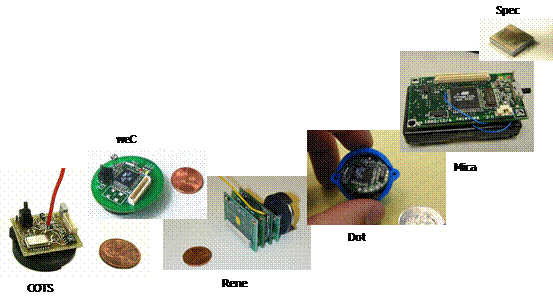

§
Ultra-low Power
§
Short-range RF wireless
§
Low-cost
§
Self-healing
ad-hoc networking
§
Multi-hop, peer-to-peer
topology
§
Multi-year
operation
The
emerging field of wireless sensor networks combines sensing, computation, and
communication into a single tiny device.
Through advanced mesh networking protocols, these devices form a sea of
connectivity that extends the reach of cyberspace out into the physical
world. As water flows to fill every room
of a submerged ship, the mesh networking connectivity will seek out and exploit
any possible communication path by hopping data from node to node in search of
its destination. While the capabilities
of any single device are minimal, the composition of hundreds of devices offers
radical new technological possibilities.
The
power of wireless sensor networks lies in the ability to deploy large numbers
of tiny nodes that assemble and configure themselves. Usage scenarios for these devices range from
real-time tracking, to monitoring of environmental conditions, to ubiquitous
computing environments, to in situ monitoring
of the health of structures or equipment.
While often referred to as wireless sensor networks, they can also
control actuators that extend control from cyberspace into the physical world.
The
most straightforward application of wireless sensor network technology is to
monitor remote environments for low frequency data trends. For example, a chemical plant could be
easily monitored for leaks by hundreds of sensors that automatically form a
wireless interconnection network and immediately report the detection of any
chemical leaks. Unlike traditional
wired systems, deployment costs would be minimal. Instead of having to deploy thousands of feet
of wire routed through protective conduit, installers simply have to place
quarter-sized device, such as the one pictured in below, at each sensing
point. The network could be
incrementally extended by simply adding more devices – no rework or complex
configuration. With the devices used by JLH Labs, the system would be capable
of monitoring for anomalies for several years on a single set of batteries.
In
addition to drastically reducing the installation costs, wireless sensor
networks have the ability to dynamically adapt to changing environments. Adaptation mechanisms can respond to changes
in network topologies or can cause the network to shift between drastically
different modes of operation. For example, the same embedded network
performing leak monitoring in a chemical factory might be reconfigured into a
network designed to localize the source of a leak and track the diffusion of
poisonous gases. The network could
then direct workers to the safest path for emergency evacuation.
Other wireless systems only scratch the
surface of possibilities emerging from the integration of low-power
communication, sensing, energy storage, and computation. Generally, when people consider wireless
devices they think of items such as cell phones, personal digital assistants,
or laptops with 802.11. These items
costs hundreds of dollars, target specialized applications, and rely on the
pre-deployment of extensive infrastructure support. In contrast, wireless sensor networks use
small, low-cost embedded devices for a wide range of applications and do not
rely on any pre-existing infrastructure.
The vision is that these devise will cost less that $1 by 2005.
Unlike traditional wireless devices,
wireless sensor nodes do not need to communicate directly with the nearest
high-power control tower or base station, but only with their local peers. Instead, of relying on a pre-deployed
infrastructure, each individual sensor or actuator becomes part of the overall
infrastructure. Peer-to-peer networking
protocols provide a mesh-like interconnect to shuttle data between the
thousands of tiny embedded devices in a multi-hop fashion. The flexible mesh architectures envisioned
dynamically adapt to support introduction of new nodes or expand to cover a
larger geographic region. Additionally,
the system can automatically adapt to compensate for node failures.
The vision of mesh networking is based on
strength in numbers. Unlike cell phone
systems that deny service when too many phones are active in a small area, the
interconnection of a wireless sensor network only grows stronger as nodes are
added. As long as there is sufficient
density, a single network of nodes can grow to cover limitless area. With each node having a communication range
of 50 meters and costing less that $1 a sensor network that encircled the
equator of the earth will cost less that $1M.
An
example network is shown in above. It
depicts a precision agriculture deployment—an active area of application
research. Hundreds of nodes scattered
throughout a field assemble together, establish a routing topology, and
transmit data back to a collection point.
The application demands for robust, scalable, low-cost and easy to
deploy networks are perfectly met by a wireless sensor network. If one of the nodes should fail, a new
topology would be selected and the overall network would continue to deliver
data. If more nodes are placed in the
field, they only create more potential routing opportunities.
There is extensive research in the
development of new algorithms for data aggregation, ad hoc routing, and
distributed signal processing in the context of wireless sensor networks. JLH Labs has strong ties into the research
community in order to track the latest algorithmic advances.
In
developing the micro-networking technology, the most difficult resource
constraint to meet is power consumption.
As physical size decreases, so does energy capacity. Underlying energy constraints end up
creating computational and storage limitations that lead to a new set of
architectural issues. Many devices,
such as cell phones and pagers, reduce their power consumption through the use
specialized communication hardware in ASICs that
provide low-power implementations of the necessary communication protocols and
by relying on high-power infrastructure.
However, the strength of wireless sensor networks is their flexibility
and universality. The wide range of
applications being targeted makes it difficult to develop a single protocol,
and in turn, an ASIC, that is efficient for all applications. A wireless sensor network platform must
provide support for a suite of application-specific protocols that drastically
reduce node size, cost, and power consumption for their target
application.
The
wireless sensor network architecture used by JLH Labs includes both a hardware
platform and an operating system designed specifically to address the needs of
wireless sensor networks. TinyOS is a
component based operating system designed to run in resource constrained
wireless devices. It provides highly
efficient communication primitives and fine-grained concurrency mechanisms to
application and protocol developers. A key concept in TinyOS is the use of
event based programming in conjunction with a highly efficient component
model. TinyOS enables system-wide
optimization by providing a tight coupling between hardware and software, as
well as flexible mechanisms for building application specific modules.
TinyOS
has been designed to run on a generalized architecture where a single CPU is
shared between application and protocol processing. We detail three generations of wireless nodes
and a host of application deployments that have proven the capabilities of our
general system architecture. Below is a
picture and timeline of several “mote” generations. The Mica platform has been produced in the
largest quantities – over 5000 Mica nodes have been produced and distributed to
over 250 companies and research organizations from
around the country. The Mica platform
includes a low power transceiver, a power management subsystem, extended
storage and an embedded microcontroller.
The
most advanced hardware platform we present is a single-chip CMOS device that
integrates the processing, storage and communication capabilities to form a
complete system node. This single chip
node – called Spec – measures just 2.5 mm x 2.5 mm, contains a microcontroller,
transmitter, ADC, general purpose I/O ports, UART, memory and encryption
engine. The tiny chip only needs to be
supported by a 32 KHz watch crystal, an off-chip inductor and a power supply, a
battery and a 4 MHz clock. The Spec
node represents the coming generation of wireless sensor nodes that will be
manufactured for pennies and deployed in the millions.
|
 Design lineage of Mote
Technology. COTS (Common off the
shelf) prototypes lead to the weC
platform. Rene then evolved to allow
sensor expansion and enabled hundreds of compelling applications. The Dot node was architecturally the same
as Rene but shrunk into a quarter-sized device. Mica – discussed in depth in this thesis –
made significant architectural improvements in order to increase performance
and efficiency. Spec represents the
complete integrated CMOS vision. |
Both
the Mica and Spec node are used to substantiate our claim that optimal system
architecture for wireless sensor networks is to have a single central
controller directly connected to a low-power radio transceiver through a rich
interface that supports hardware assistance for communication primitives. In contrast to having a hierarchical
partition of hardware resources dedicated to specific functions, a single
shared controller performs all processing.
This allows for the dynamic allocation of computation resources to the
set of computational tasks demanded by the system. The layers of abstraction typically achieved
through hardware partitioning can instead be achieved through the use of a
highly efficient software-based component model. Software abstractions allow for a wider
scope of cross-layer optimizations that can achieve orders of magnitude
improvements is system performance. The
power and viability of this architecture is demonstrated through a collection
benchmarks performed on real-world hardware and in application level
deployments.